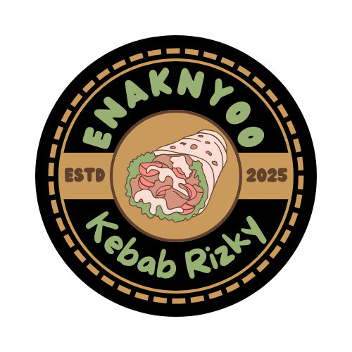

Bahtiar
🌱 Hidup bukan tentang siapa yang paling cepat, tapi siapa yang tetap berjalan. Jangan takut gagal, karena dari gagal kita belajar jadi kuat. Bermimpi boleh tinggi, tapi jangan lupa tetap rendah hati. Jalani hari ini dengan jujur, sisanya biar waktu yang jawab.